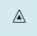
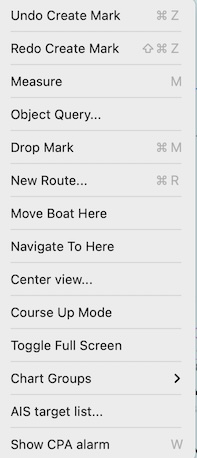
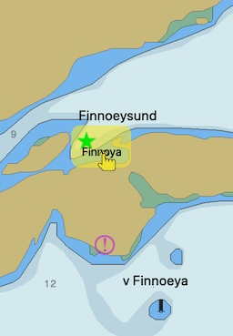
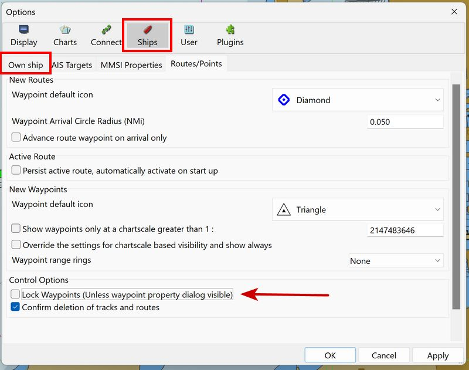

Use Marks
-
Right Click a Mark allows properties/delete/navigate to/send to GPS/copy as KML
Advanced
Marks are user defined markers showing points of interest, which can serve many purposes. They could mark good anchorages, fishing spots, new navigational markers (wrecks, channel markers) or anything else of interest,
They are also used as MOB markers and for Anchor Watch, and they can be included in routes.
Marks
Some icons used for Marks:
…
…
Triangle Shipwreck MOB
A complete list of available icons can be found in the Advanced Manual: User Icons
Create a Mark
There are a few ways to directly create marks.
-
at boat’s position: "Ctrl + O" or via Menu Tools
-
at cursor position: "Ctrl + M" or via Menu Tools
-
at cursor position: "Right-click" & press "Drop Mark" in the popup menu.

Marks created these ways will have a triangular icon: the default icon, when creating a mark. This can be changed in Options → Ships → Routes
Alternatively, you can change the the value "DefaultWPIcon" in the opencpn.ini (config) file. Use the name of any available icon in the properties dialog:
empty, airplane, anchorage, anchor, boarding, boundary, bouy1, bouy2, campfire, camping, coral, fishhaven, fishing, fish, floating, food, fuel, greenlite, kelp, light, light1, litevessel, mooring, oilbouy, platform, redgreenlite, redlite, rock1, rock2, sand, scuba, shoal, snag, square, triangle, diamond, circle, wreck1, wreck2, xmblue, xmblue_, xmgreen, xmgreen_, xmred, xmred_, activepoint
values representing the default set of built-in icons or to a filename of any of your UserIcons, without the the path and .xpm extension. If you have a file called MyICON.xpm in the user icons folder, the value will be simply MyICON
Undo-Redo creating a Mark
A right click next to a newly created Mark will open a contextual menu, which allows you to undo or redo the last comment. E.g. undo create mark or redo create mark or undo moving mark depening on your last actions. 
Move a Mark
You can move a mark by left-click-dragging it around.
An alternative to move a mark is to right click on it, select properties and type in new coordinates.

Lock a Mark
-
To prevent accidental movement of marks go to Toolbars > Options > Ships > Routes-Points > Control Options (v4.8.8 menu: Options>Display>Advanced) and click the box "Lock Marks".
-
Changing the position of marks via properties dialog works even with locked marks.

_ _
Mark Properties
All Marks have properties that can be seen by right-clicking and pressing "Properties", or even simpler just double click the Mark. A detailled description of properties can be found here.